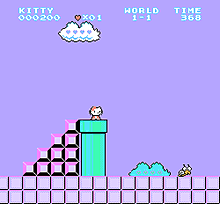
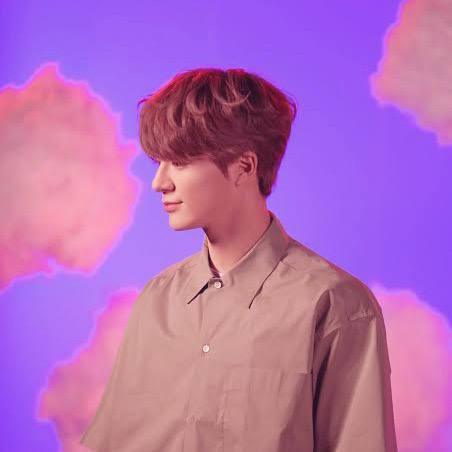

⭐️Ami's self-introduction page⭐️
---⛅️🍒About me🍒⛅️---
情報デザイン専攻２年B組の碓井亜実（ウスイアミ）です。
kpopアイドル がずっと好きです！
おすすめないの？と聞かれた時は、難しいのでひとまず こちら
をお見せしています。
紫が好きなので今回の課題ページでも取り入れて統一感を意識しました。
---🍦About programming🍦---
一年生のプログラミング入門も山崎先生に教えて頂いていました。
昨年の授業でJavascriptの勉強をしていた覚えがあるので得意ではありませんが
よく目にしたことがあります。
また、二年の前期には授業を通してC言語を学びましたが、よくわからなかったため
授業内でも使用したpaiza.IOにてこれからも勉強をしていこうと考えています。

